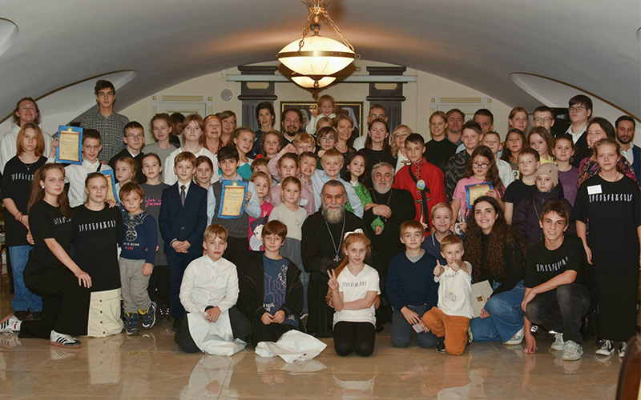
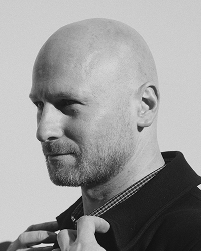
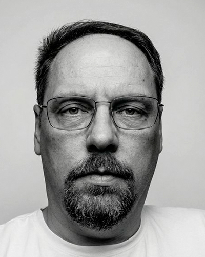
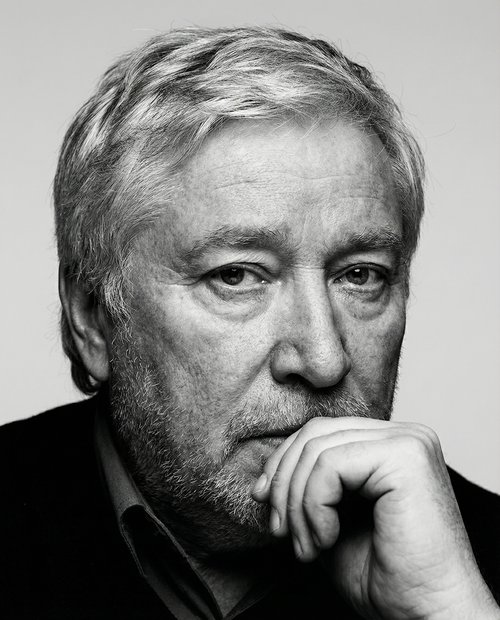
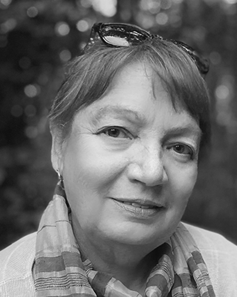

01
Просветительские программы
Организуем лекции, семинары, круглые столы, встречи, выставочные и публичные форматы, связанные с культурой, наукой, образованием и общественно значимыми инициативами.
АНО «Факториал» — организация, работающая в сферах культуры, науки, просвещения и информационных технологий. Мы разрабатываем и сопровождаем проекты, в которых соединяются образовательные программы, игровые форматы, публичные события и цифровые инструменты.
Для нас важны не только отдельные мероприятия, но и качество среды: каким образом человек включается в процесс, как устроено содержание, насколько точно подобраны форма, язык и инструменты взаимодействия.
Организуем лекции, семинары, круглые столы, встречи, выставочные и публичные форматы, связанные с культурой, наукой, образованием и общественно значимыми инициативами.
Работаем с настольными играми, турнирами и интерактивными сценариями, в которых сложные темы раскрываются через участие, диалог, наблюдение и совместное действие.
Разрабатываем информационные ресурсы, программные и организационно-методические инструменты для сопровождения просветительских, культурных и исследовательских проектов.
На сайте представлены не все направления деятельности организации, а лишь несколько показательных примеров: публичные события, просветительские игровые форматы, методическая и цифровая работа.

Совместно с Феодоровским собором был проведен дружеский турнир, посвященный знакомству подростков и молодежи с церковным календарем, праздниками и богослужебной традицией через содержательную игровую форму. Для нас это важный пример того, как просвещение может быть одновременно точным, уважительным и вовлекающим.
Организация участвует в форумах, встречах и общественных площадках, где игровые механики помогают говорить с детьми, подростками и семьями о культуре, истории, традиции, памяти и ценностях совместного участия.
Отдельное направление работы — семинары и консультации для педагогов, организаторов и партнерских площадок, а также сопровождение программ, в которых игровые и просветительские форматы используются в долгую и осмысленно.
В зоне развития — цифровые платформы, информационные среды и технологическое сопровождение проектов, связанных с культурой, образованием, общественными инициативами и современным распространением знания.
Здесь собраны некоторые события и форматы, через которые постепенно формируется практический профиль организации.
В «Газпром-Академии» ФК «Зенит» прошла первая практическая конференция «Смена 2.0: интеграция спортивного вектора в качество образования», объединившая педагогов, психологов, тренеров и экспертов со всей России. От АНО «Факториал» в конференции приняли участие Владимир Юрьевич Смольников и Этери Георгиевна Хорава. В рамках программы были представлены доклад «Язык футбола — для всех» и авторская педагогическая технология, основанная на настольных играх «Мемо: Футбол» и «Языковое лото: Футбол на 4 языках».
16 апреля прошел очередной турнир с игрой «Мемо. Православные праздники» в Духовно-просветительском центре Санкт-Петербургской Епархии на Невском, 177. Дети с удовольствием подключились к обсуждению православных праздников уже на этапе знакомства с игрой. Встреча прошла тепло и содержательно, участники активно включались в процесс, а по итогам события дети остались довольны.
Организация объединяет просветительские, культурные, игровые и цифровые направления, формируя среду для работы с общественно значимыми проектами, знаниями, профессиональным ростом и современными форматами участия.
В Санкт-Петербурге состоялась встреча молодежных команд, посвященная игре «Ось времени. Богослужебный год». Турнир был организован как просветительское и объединяющее событие, в котором содержательная игровая форма стала основой живого разговора о церковной традиции, праздниках и календаре.
В ряде форумов и открытых событий были представлены настольные и тематические игровые форматы, посвященные культурной памяти, праздникам, историческим сюжетам и развитию содержательного семейного досуга.
Наряду с самими игровыми программами ведется работа по обсуждению и адаптации просветительских решений для педагогов, организаторов и партнерских площадок, заинтересованных в устойчивом использовании таких форматов.
Команда организации объединяет управленческую, методическую, научную и технологическую компетенции, необходимые для развития культурно-научных и образовательных проектов.

Осуществляет текущее руководство организацией, координирует проектную работу, внешние связи и развитие партнерских направлений.
basspace@mail.ru
Ответственный секретарь, кандидат физико-математических наук, доцент. Курирует технологическое развитие, цифровые решения и IT-сопровождение проектов.
dluciv@dluciv.name
Кандидат педагогических наук. Отвечает за методическую рамку программ, образовательную логику проектов и содержательное сопровождение инициатив.
vysm@mail.ru
Физик. Сопровождает взаимодействие с государственными структурами, партнерами и спонсорами, а также внешние организационные коммуникации.
lm25.10@yandex.ru